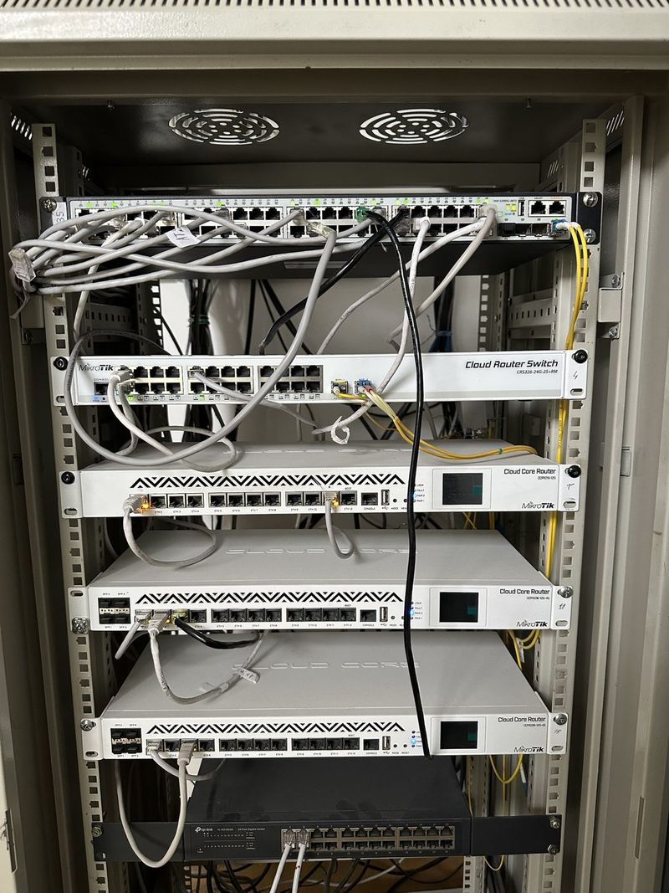
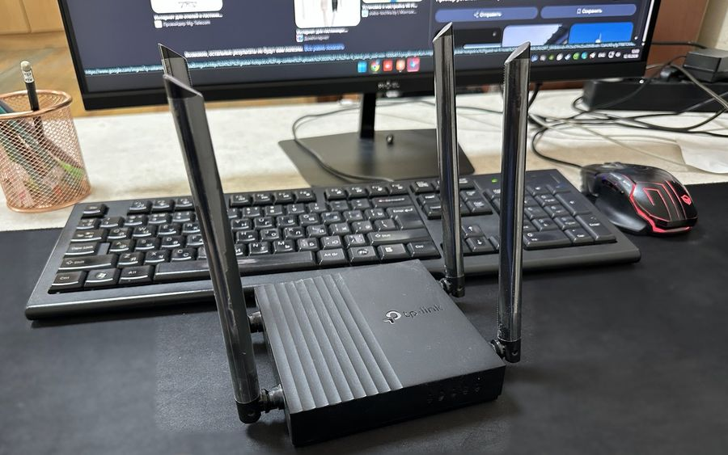

Uy Wi-Fi
Internet butun uyga yetmasa
- MikroTik hAP ax² router (Wi-Fi 6)
- Oʻrnatish va sozlash
- Mehmonlar uchun alohida Wi-Fi
- Parol va xavfsizlik
1 650 000 soʻm
uskunasi bilan, taxminan
Tanlash
Butun uy yoki ofisga yetadigan Wi-Fi, toʻgʻri sozlangan MikroTik, router va kompyuterlar.
Ishni oʻzim bajaraman va oʻzim javob beraman — Saʼdulla Khaitov
Asosiy xizmatlar. Roʻyxatda yoʻq ish boʻlsa ham yozing — maslahat beraman.
RouterOS: firewall, NAT, VPN, bir nechta provayder va tezlik cheklovlari.
Ofis va uy uchun tarmoqni loyihalash, kabel tortish va rozetka oʻrnatish.
Access point’lar, bino boʻylab uzilmaydigan Wi-Fi va mehmonlar tarmogʻi.
Provayder bilan ulanish, zaxira kanal va tezlikni tekshirish.
Server, printer va umumiy papkalarni sozlash, foydalanuvchi huquqlari.
Nosozliklarni topish, monitoring va doimiy xizmat koʻrsatish.
Men bajargan loyihalardan bir nechtasi.


Tayyor paketni tanlang yoki alohida xizmat buyurtma qiling. Aniq narxni vazifani koʻrgach aytaman.
Internet butun uyga yetmasa
10 ish oʻrnigacha ofis uchun
Doimiy texnik yordam kerak boʻlsa
Alohida xizmatlar: Router / Wi-Fi sozlash — 150 000 soʻm (1 qurilma uchun) · MikroTik sozlash — 400 000 soʻm (VPN, 2 provayder) · Tarmoq nuqtasi — 60 000 soʻm (1 rozetka uchun) · Kompyuter sozlash — 150 000 soʻm (1 kompyuter uchun)
Koʻp uchraydigan sabablar: router uyning bir chetida turibdi, qalin devorlar, ulangan qurilmalar koʻp yoki router eskirgan. Koʻpincha routerni toʻgʻri joyga qoʻyish va qayta sozlashning oʻzi yordam beradi.
Kuchaytirgich (repiter) oʻrniga mesh tizim yoki kabel bilan ulangan qoʻshimcha nuqta (access point) qoʻyish yaxshiroq — xonadan xonaga oʻtganda internet uzilmaydi.
Bu professional router: ikki provayderni ulash, mehmonlar uchun alohida Wi-Fi, tezlikni cheklash, filiallar orasida VPN. Ofis, doʻkon va mehmonxonaga juda mos, oddiy uyga shart emas.
Narx va muddatni 15 daqiqada bilasiz.